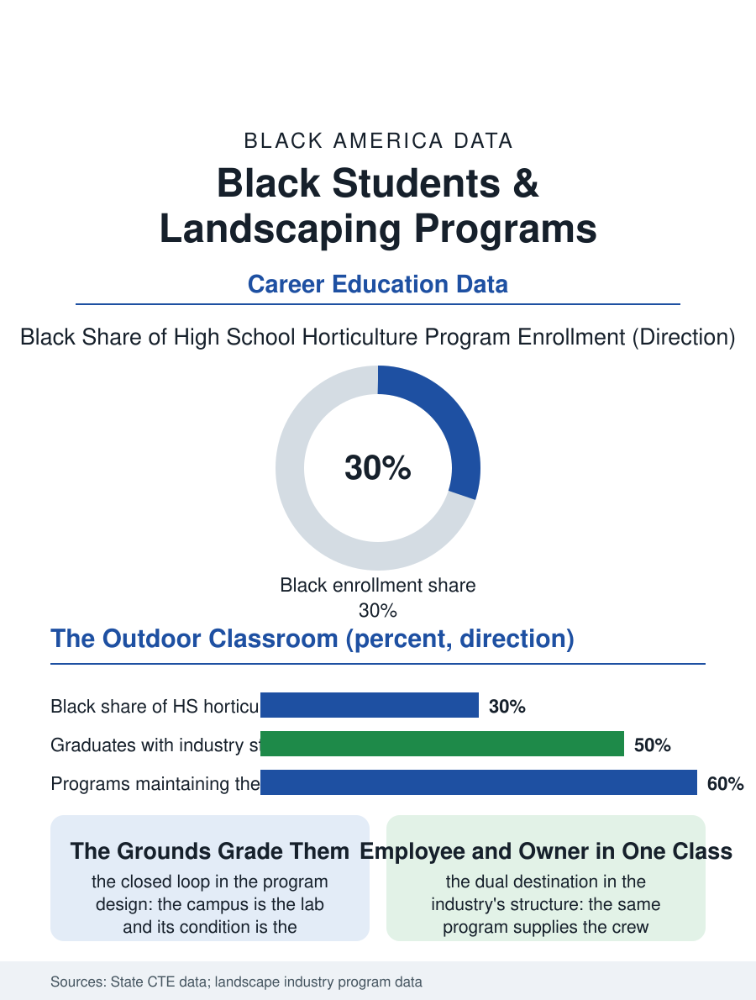

Black Education
Grounds of the School: Black Students and Horticulture
The campus as the lab, the courtyard as the report card, and a program that trains the employee and the owner in one class. The horticulture file.

The landscaping and horticulture program is the CTE file's outdoor classroom: the grounds of the school itself as the lab, the greenhouse as the winter shop, in a program whose industry, the landscape file of the employment section, is among the largest employers of the students' own neighborhoods. This article reads the horticulture program file.
The Campus as the Lab
The program's economy is its elegance: the school's own grounds are the practicum, the students maintaining and redesigning the campus they attend in a closed loop like the HVAC program's units, with the accountability immediate and public, the courtyard's condition being the program's report card read by the whole school daily. The curriculum divides between the green industry's two cultures, the ornamental's design and plant knowledge and the turf's agronomy, with the irrigation and the arboriculture of the advanced terms, and the industry's certifications, the landscape industry's student credentials, as the hiring documents in the file's pattern. The greenhouse's production, the bedding plants and the vegetables of the spring sale, is the program's enterprise as the agriculture file's projects are, its proceeds funding the next season in the small closed economy the students keep the books for. The tree file is the program's advanced pride, the climbing and the rigging taught as the arborist's art under the safety file's strictest discipline in the building, the students' harness work in the campus's own oaks being the school's most photographed curriculum and the industry's scarcest junior credential in the storm belt's recurring demand. The design studio's term, the students drawing the courtyard's next phase to the client's, the principal's, brief and budget, is the program's capstone in the pattern of the media lab's commissions, the rendered plan defended before the adults who will walk through its realization, an examination in accountability that the worksheet's subjects cannot stage.
The Industry at the School's Gate
The employer awaiting the graduate is the file's distinction, because the landscape industry hires at the school's gate in the literal sense, its crews working the same streets, its shortage of the crew leader and the licensed applicator being the rungs the program's completer with the pesticide license and the irrigation certificate can claim at an age when the other trades are still apprenticing. The business file above the program is the owner's: the landscape company of the business section being among the most founded of the trades' firms from exactly this workforce, so that the program is, unusually, a school for both the employee's first job and the proprietor's eventual one, its business units teaching the bid and the route alongside the pruning. The sale's bookkeeping, the costs of the bench against the spring's receipts, is the program's mathematics in the pattern of the other practica, learned on money that is actually the students' to lose.
Grounds of the School
The horticulture file closes on the program's quiet public argument, because a school that teaches its students to keep its own grounds beautifully is making a claim about the dignity of the work the neighborhood's economy runs on, in the pattern of the other rooted programs, and the students' accounts record the claim's receipt in the pride of the maintained courtyard at the school's entrance, the first thing the visitor learns about the building. The industry counts its unfilled crew leader posts each spring. The file's last entry is the spring sale's Saturday, the greenhouse's doors open to the neighborhood's gardeners and the students ringing the flats their winter raised, the school's grounds and the community's gardens supplied from the same benches, which is the program's whole design in one transaction. The principal's brief, revised by the students' questions at the defense, is remembered by both parties as the term's real examination, the plan's drawings pinned afterward in the corridor where the school reads its own future. The corridor's display stays up through the summer's registration, when the new students and their parents walk past the drawings of the courtyard they will enter in the fall, reading the school's intentions in its own grounds before a single class has had the chance to disappoint or to redeem them. The file records it without further ornament, the fact being sufficient.
More in Black Education
Black Educational Attainment: High School Parity, the College Gap
About 89 percent of Black adults hold a high school diploma and one in four holds a bachelor's degree or higher — the attainment ladder, the college completion gap, and the generational trend.
Historically Black Colleges and Universities: Enrollment and Degrees
More than 100 HBCUs enroll roughly 290,000 students and award about one in six Black bachelor's degrees — an outsized share from a small sector. The federal education data.
Black College Enrollment: 2.4 Million Students
About 2.4 million Black students are enrolled in American colleges — nearly two-thirds of them women. The NCES enrollment data by sector, level, and trend.
Source: State career and technical education data; National Association of Landscape Professionals education data.